Agosto 2018
Nuestos Inicios
Cómo nos decidimos por una casa Prefabricada CUBE, comprando terreno e incluyendo hipoteca
Vamos a explicar detalladamente nuestra experiencia en el proceso de búsqueda, construcción y resultado final (incluyendo nuestras expectativas, situación hipotecaria, plazos, resultado final con fotos y resumen de GASTOS TOTALES al final del post) de una casa modular de CASAS CUBE.
Imaginamos que muchos de vosotros estáis en la siguiente situación: pagáis un alquiler en un piso o vivís con familiares para ahorraros ese gasto pero queréis independizaros, y os preguntáis si es mejor seguir así (alquilados), alquilar en caso de que estéis conviviendo con familiares, o comprar y pagar mensualmente por algo que va a ser tuyo el día de mañana. Pues esa fue la situación en la que nos vimos nosotros hace dos años.
¿Alquiler o compra?
Todo empezó cuando en la primavera de 2016 nos planteamos dejar de vivir en un piso para trasladarnos al campo. Teníamos dos perritas de aguas y nos gustaba llevarlas todos los días a hacer algo de ejercicio al campo. Siempre habíamos vivido en pisos, de distinto tamaño y en distintos lugares, pero nos incomodaba tener que desplazarnos en coche a zonas verdes (alejadas de la gente, por no molestar con las perras).
Lo primero que hicimos fue plantearnos alquilar una casa. Buscamos las distintas opciones que encontramos a través de agencia inmobiliaria, apps tipo idealista, fotocasa y demás, y particulares. Lo más “económico” que encontramos suponían 650€/mes y a 20 minutos de donde vivíamos en ese momento (y a 50 minutos del trabajo). Nos emocionó visitar esa casa, imaginarnos viviendo ahí, pero la distancia y, sobretodo, el precio mensual nos echaba para atrás. ¿650€/mes para simplemente vivir el tiempo que estemos allí? Somos personas bastante humildes, en ese momento además trabajando uno de los dos a jornada completa y el otro a media jornada… no lo vimos viable.
¿Crédito hipotecario?
Una vez descartado el alquiler de una casa de campo y superar la depresión, decidimos simplemente mirar cuánto costaban las casas en venta de la zona y analizar si podríamos asumir una hipoteca. Lo primero que hicimos fue preguntar al banco, dadas nuestras características y en ese momento, cuáles eran las condiciones de las hipotecas y cuál era el límite que nos aprobarían, y así poder centrar la búsqueda de una casa en torno a esa cifra. En ese momento, tuvimos que reflexionar: ¿cuánto estábamos dispuestos a pagar mensualmente las próximas décadas entre los dos, teniendo en cuenta todas las cosas que podían pasarnos (cambios laborales, familiares, etc.)?
Nos pusimos un límite: 450€ mensuales. Hasta la fecha, habíamos vivido siempre en pisos en ciudad (hasta conocernos, pagando cada uno un alquiler), y el precio más bajo que habíamos pagado estaba entorno a los 500€ mensuales de alquiler por pisos de unos 85m2 (con garaje y trastero) y bien ubicados. Pues nos dijimos a nosotros mismos: si vamos a hipotecarnos que sea pagando menos que lo que hemos pagado hasta ahora de alquiler y, además, que sea una cifra que pueda pagarse con un solo sueldo a tiempo completo o dos medias jornadas, por lo que pueda pasar el día de mañana.
Sabiendo que partíamos de 450€ mensuales, analizamos en el banco qué importe total a invertir nos suponía esa mensualidad. Teníamos dudas de si hipoteca de tipo fijo o tipo variable. Fue la primera decisión que debimos tomar, y bueno, en esto ganó uno de los dos y decidimos tipo FIJO (imagino que tenéis distintas opiniones sobre esto, cada uno tiene sus razones). De este modo, estábamos en torno a los 110.000€ - 115.000€ dadas las condiciones hipotecarias de ese momento (hablamos de marzo de 2016, tipo fijo con 2.5% de interés a 30 años).
Ya sabíamos el importe máximo que podíamos permitirnos. Es importante también tener en cuenta que el banco no nos financiaba el 100% del precio de la vivienda, por lo que debíamos tener ahorros propios para empezar este nuevo proyecto y, además del precio de la casa, hay que pagar un 10% de impuestos en el momento de la compra.
El banco nos financiaba sobre el 80% (negociable) del importe más alto entre tasación y compraventa de la vivienda. En ese momento, conseguimos acumular en ahorros entre los dos un pequeño fondo para intentar suplir el 20% que el banco no nos cubriera (más algún extra que pudiera surgir) y llegar así al 100%: el 80% hipotecado y el 20% de fondos propios.
¿Qué casa comprar?
Empezamos la búsqueda de viviendas por la zona con precio tope de 120.000€ (para dejar margen para los gastos e impuestos de la compraventa). Visitamos 3 viviendas que entraban en ese presupuesto. De verdad, se nos vino el mundo encima. Eran casas destartaladas, que necesitaban reformas considerables y aún encima, mal ubicadas.
Llegados a este punto, sinceramente nos rendimos. Dimos por concluida la que era la derrota del año. Llevábamos muchas horas de búsqueda, de informarnos en inmobiliarias, notarias, bancos, internet, en fin, qué os voy a contar, muchos sabréis lo que es. Son muchas ilusiones y expectativas frustradas. Y todo para nada.
Cómo conocimos CUBE
Unas semanas después, en mayo de 2016, pasamos al lado de la oficina de Casas CUBE, en el centro comercial de Marineda City, en A Coruña. Nos sorprendieron, sinceramente, los precios que tenían y la transparencia y claridad con las que los anunciaban en su página web y en los escaparates de la oficina. Y nos llamaba la atención que fuera presupuesto cerrado. Imagino que todos asociamos la palabra IMPREVISTOS a la construcción. El miedo que supone para una persona que invierte todos sus ahorros en una construcción el que aparezcan sorpresas y no se pueda finalizar la vivienda. Y todo ello sin tener en cuenta que para construir, hace falta un terreno que nosotros no teníamos…
Pero como siempre, nosotros nos creamos nuestras ilusiones rápidamente y pedimos cita para visitar la casa piloto. En este aspecto, tenemos que reconocer que uno de nosotros era muy escéptico con las casas prefabricadas: son casetas de obra, no aíslan bien, son bungalows, tienen poca durabilidad, y un sinfín de CHORRADAS (y lo ponemos en mayúsculas) e IGNORANCIAS de quien no conoce y juzga sin saber. Aquí la otra parte de la pareja fue la que tiró del carro y convenció para ir a ver la casa piloto.
La visita a la casa piloto
A los pocos días visitamos la casa piloto de Marineda City. Una cube 100m2 de una sola planta. Alucinamos. Lo primero a destacar, a parte de la atención recibida por la comercial Vanessa, es la gran capacidad de aislamiento acústico que tenía la casa. Justo delante de la casa había una fuente de agua, con bastante ruido, y un grupo de niños jugando y gritando. Fue entrar por la puerta del porche, cerrar la puerta de cristal y… SILENCIO ABSOLUTO. Nos quedamos helados. Primer punto positivo. La comercial nos enseñó la casa, nos informó sobre todas las características técnicas (desmitificando las tonterías que uno de los dos tenía en la cabeza): aislamiento, tejado, instalaciones eléctricas, de fontanería, etc; nos informó sobre lo que NO iba incluido en el presupuesto y sobre los plazos del proceso. Otra gran sorpresa: se comprometían a tener la construcción hecha y darnos la llave de la casa como mucho 4 meses después de tener la licencia de obra. Alucinamos de nuevo.
Esta es la misma casa que visitamos. Revestimiento de mármol y pizarra:

La pregunta que teníamos nosotros era: ¿en qué tipo de terrenos se puede construir una de estas casas? La respuesta fue rotunda: en los mismos terrenos que se puede construir una vivienda mediante construcción tradicional. Estas casas, aunque sean prefabricadas, tienen las condiciones y garantías que ofrecen gracias a su cimentación (que también la tienen las casas tradicionales) y a los materiales aislantes que conforman sus paredes y revestimientos.
Os resumimos la visita, la información y, lo más importante, EL PRESUPUESTO Y LOS GASTOS EXTRA. En el siguiente enlace podéis acceder a la web de cube, los tamaños de sus viviendas y los precios:
https://casasprefabricadasCUBE.com/
Existían varias cube en función de los metros cuadrados de la vivienda. En nuestro caso, queríamos algo de una planta, tamaño piso, pero en el campo. No necesitábamos grandes lujos ni una mansión. Algo humilde que pudiéramos pagar y disfrutar de la vida sin vernos ahogados. Mientras Vanessa (la comercial) nos informaba, vimos que la de 100m2 nos era suficiente. En ese mismo momento de nuestras vidas, habríamos podido vivir en una de 75m2, pero queremos ampliar la familia en los próximos años y 75m2 la veíamos justa.
Os dejamos unas imágenes del folleto de por aquel entonces y las fotos que sacamos de la casa piloto:
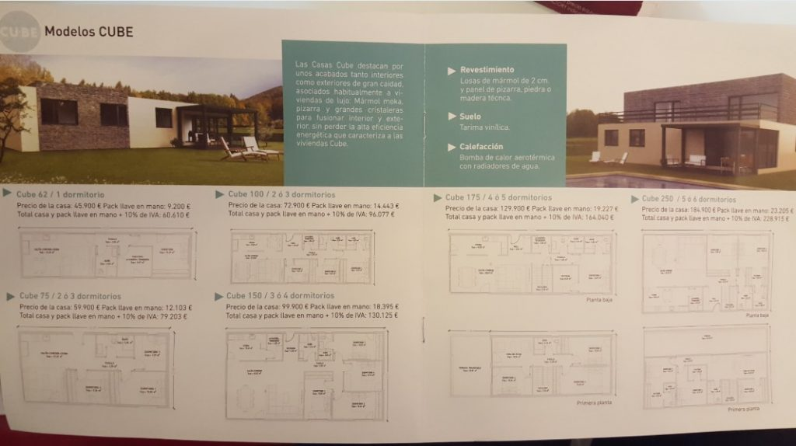
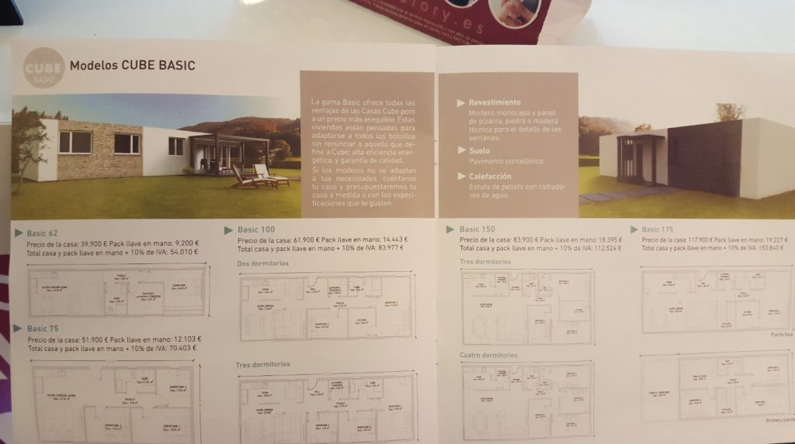
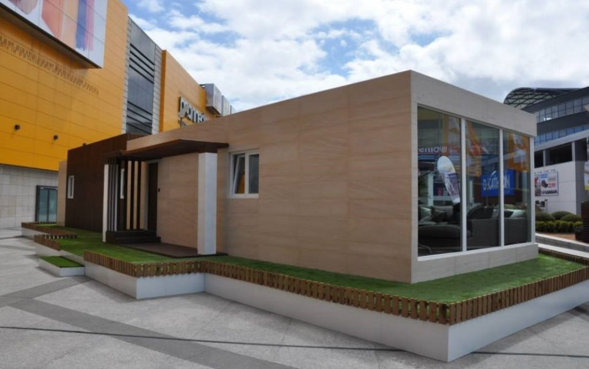
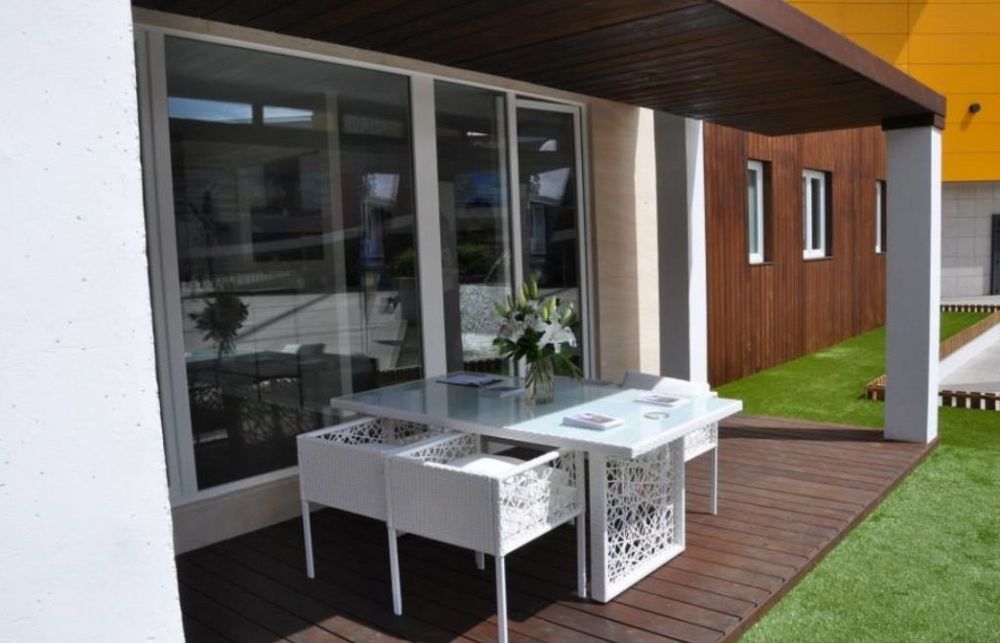
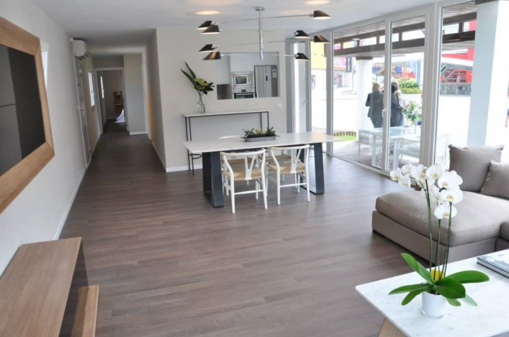
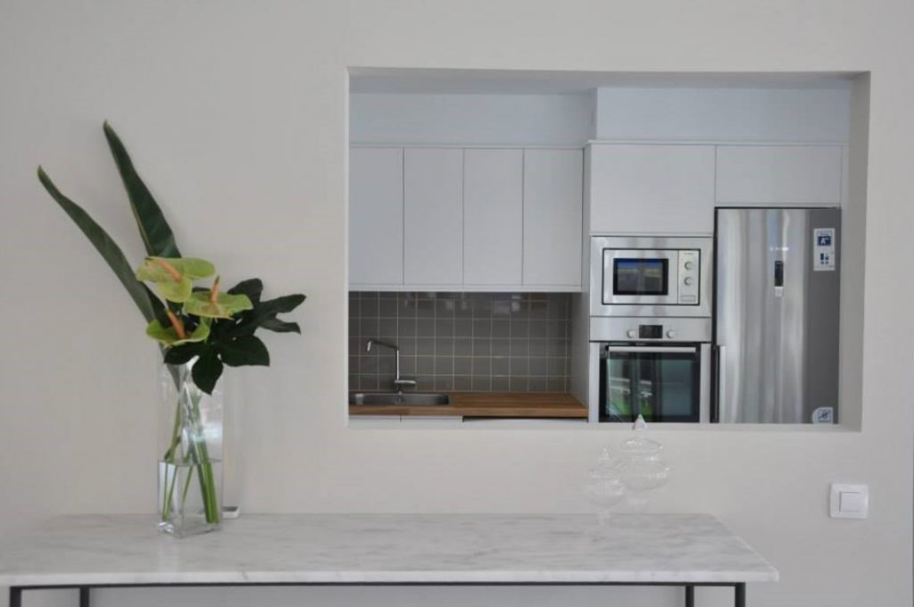
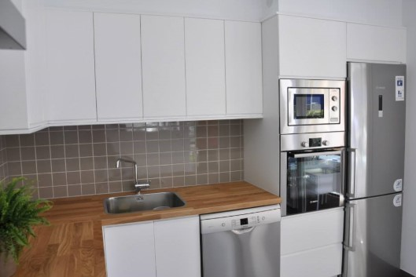
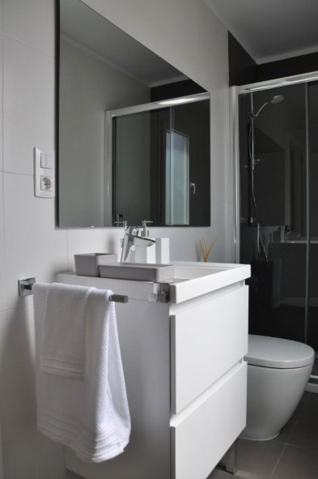
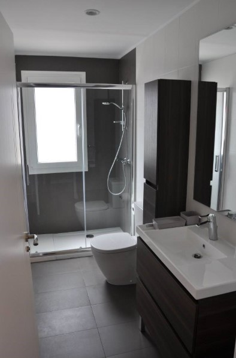
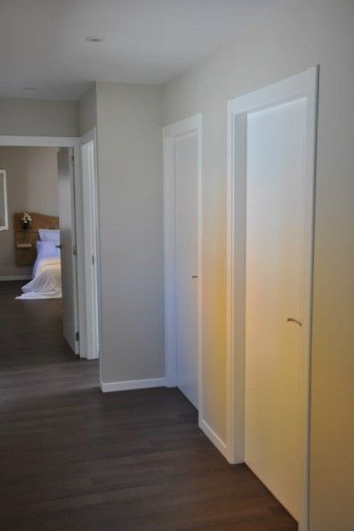
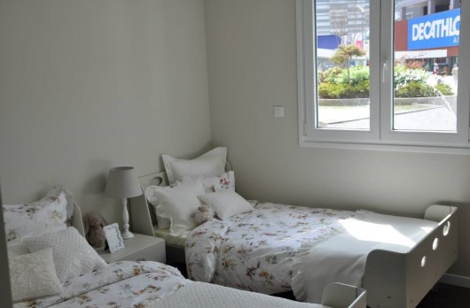
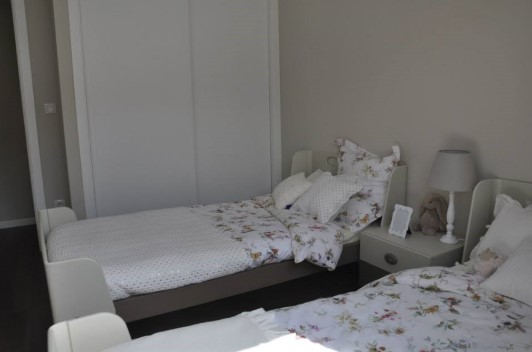
Presupuesto y gastos extra para una CUBE 100m2
Decididos por la 100m2, queríamos conocer los gastos y presupuesto. En ese momento cube no tenía la gama BASIC, ni la PREMIUM, así que lo que nosotros estábamos viendo era una opción intermedia entre las cube normales y las BASIC. Os adjuntamos el catálogo de ese momento, con las características de la cube 100m2 y los precios, que os desglosamos a continuación añadiendo lo que NO incluye el presupuesto:
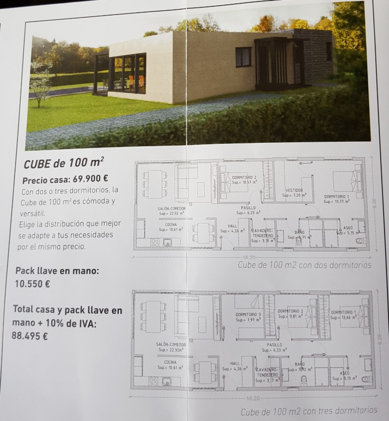
Como podéis ver, con llave en mano eran 88.495€ (con pack llave en mano supone que ellos se encargan de todo, preparar la documentación, toda la obra, en fin, todo. Nosotros únicamente somos intermediarios entre cube y el ayuntamiento para presentar la documentación en nuestro nombre). Teníamos claro que de hacerlo, tenía que ser llave en mano, puesto que nosotros no teníamos ni idea de arquitectura, obra y edificación.
Cube nos daba la opción de adecuar la distribución de la casa a nuestras necesidades manteniendo algunas condiciones (como que los baños, lavadero y cocina estuvieran del mismo lado de la casa para facilitar la instalación de fontanería), pero podíamos modificar el tamaño de las habitaciones. Todo esto encajaba perfectamente en lo que queríamos.
Ahora bien, ¿qué gastos EXTRA debíamos afrontar no incluidos en los 88.495€?. Los siguientes:
- El transporte. En función de la distancia a su almacén, el transporte se cobraba a 5.6€/km. Nos supondría aproximadamente 500€. Asumible.
- Impuesto de licencia de obra. En función del ayuntamiento entre un 2 y un 4% del valor de ejecución material. En nuestro caso, nos supondría unos 2400€.
- Electrodomésticos: cube ofrece un pack BOSH muy bien de precio, en nuestro caso preferimos comprar el pack a cogerlo por separado, salía muy bien de precio: 2500€
- Alta de suministros de Electricidad y Agua.
- Acometidas y/o saneamiento agua.
- Cimentación si el desnivel de la finca es superior al 2%. Hasta un 2% va incluido. Es complicado que un terreno tenga menos de un 2% de desnivel, así que aquí puede estar el verdadero pellizco de los gastos extra. Depende de cada terreno.
- Licencia de ocupación y trámites de registro de propiedad. Que dependen de cada ayuntamiento.
- Extras que cada uno quiera añadir a la casa para completarla a su gusto. También hablaremos de ello más adelante.
Pues una vez sumado todo a la lista, el presupuesto no varía. La construcción de la casa tiene ese precio cerrado. El resto dependerá de lo que cada uno quiera hacer en su parcela (jardín, cierre de la finca, etc.).
En ese momento hicimos una cuenta rápida: 89450+500+2400+2500=94.850€ más altas de luz y agua, acometidas licencias y cimentación.
120.000 (presupuesto que nos habíamos fijado)-94850 (teniendo en cuenta que faltaba por contar altas de luz y agua, acometidas licencias y cimentación) =25.150€
Estaba muy difícil encontrar un terreno tan barato que fuera edificable, en nuestra zona y que tuviera espacio para al menos una cube 100. Pero no perdíamos la esperanza a la vez que nos pusimos MODO AHORRO máximo, y cuando digo modo ahorro, lo digo de verdad. Ayuda familiar para comida, para alojamiento (dejamos el piso en el que estábamos alquilados y nos fuimos con familiares para ahorrar dos nóminas al mes) cero caprichos, horas extras en el trabajo, cero gastos. No sabíamos el tiempo que íbamos a tardar en encontrar algo bueno, pero queríamos estar preparados para el momento.
Contraste de información
Era evidente que cube nos iba a dar su mejor imagen, todo positivo y todo precioso. Pero queríamos más información: sobre cube, sobre las diferencias respecto a contratar una construcción tradicional y respecto a otras empresas prefabricadas.
Lo primero que hicimos fue reunirnos con uno de nuestros primos, que es arquitecto en una empresa de construcción. Le expusimos nuestras preferencias, lo que nos gustaría construir y le enseñamos las calidades y materiales de cube, así como el presupuesto. Aun yendo en su contra, nos dijo que no podía competir con semejantes precios poniendo un solo ejemplo: os incluyen dos baños y 7 metros de cristalera con aislamiento en el salón, más toda la construcción, por ese precio. En construcción tradicional, además de duplicar o triplicar el tiempo de ejecución, el precio superaría bastante el de ese presupuesto. Nos volvía a preguntar: ¿estáis seguros de que ese presupuesto incluye todo? Él tampoco daba crédito. Esto nos mosqueaba…. Era fabuloso por un lado que las calidades de materiales de cube nos garantizaran aislamiento de humedad, temperatura, sonido, y un largo ETC, pero a la vez queríamos información de más prefabricadas.
Nos pusimos en contacto con otras 5 empresas de casas prefabricadas y modulares. Eran más económicas que la construcción tradicional, pero lejos de cube. La más similar en precio, suponía uno 20.000€ más que cube, con la distribución que quisiéramos, eso sí. Pero se nos iba de precio.
Buscamos opiniones de cube en internet. No encontramos NADA. Veíamos que en su página de Facebook, construían y entregaban casas cada semana. ¿Dónde estaba esa gente? ¿Nadie comentaba nada? Hoy en día lo entendemos. Se suele comentar algo cuando NO FUNCIONA, NO GUSTA, TE ESTAFAN, etc. pero no cuando algo sale bien, gusta y cumple las expectativas.
Búsqueda de terreno
Bien, si queríamos una cube necesitábamos un terreno EDIFICABLE para construirla. Empezó el momento de visitar agencias inmobiliarias, volver a apps como idealista e indagar en webs de anuncios, además de hacer rutas en coche para ver los carteles de la gente que vendía terrenos por cuenta propia. Tras unas semanas y varios terrenos visitados y descartados, encontramos una parcela perfecta. Tuvimos la gran suerte, en el pueblo vecino (a 5 minutos en coche de nuestra familia, donde vivíamos en ese momento), de encontrar una urbanización muy devaluada por la crisis que disponía de terrenos muy muy económicos. Rectangulares, con acometidas a pie de parcela, con carreteras residenciales y aparcamiento libre y abundante, y superficies de entre 650 y 850m2.
Visitamos con la inmobiliaria varios de ellos. Todos ellos entre 50.000 y 90.000€. Únicamente tenían un hándicap: por detrás de ellos, pasa el camino INGLÉS, que forma parte del camino de SANTIAGO. Eso hace que PATRIMONIO tenga que dar el visto bueno a la hora de otorgar el ayuntamiento las licencias de obra. No iba a suponer más gasto, pero sí más tiempo de construcción. Esos mismos días, encontramos un anuncio de un particular que vendía su terreno en esa misma urbanización por algo más de 45.000€. Nos faltaban unos euros para llegar, pero ya éramos conscientes del gran ahorro que estábamos consiguiendo y que el proceso de construcción desde que compráramos el terreno iba a tardar debido a patrimonio.
Para nosotros era positivo: más meses, más nóminas de ahorro, pudiendo completar la obra subiendo nuestro presupuesto (gracias a ampliar el tiempo de construcción y ahorro).
Solicitamos al vendedor de la parcela la referencia catastral y se la facilitamos a cube. Nos mostraron desde el primer momento los aspectos positivos y los negativos. La parcela era perfecta para construir en forma y tamaño (rectangular de 820m2), pero patrimonio iba a retrasar el proyecto. Nos lo advirtieron para evitarnos frustraciones. Cube construye en toda España y tiene mucha experiencia tramitando documentación con ayuntamientos y organismos como patrimonio, que marca ciertos límites en las características de las viviendas. En ese momento, lo vimos como algo positivo: más ahorro, eso nos permitirá disponer del dinero que hoy no tenemos para pagarlo todo.
Este es el terreno en cuestión. Rectángulo perfecto de 43m x 19m. Unos 820m2:
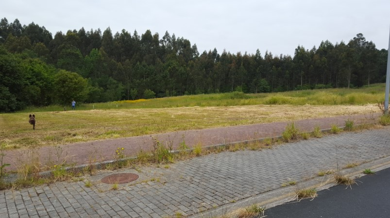
Nos comprometemos con la compra del terreno y con CUBE. Los problemas bancarios
Estábamos decididos. Teníamos dudas de si el dinero iba a llegarnos, no os vamos a engañar, pero lo comentamos en casa con todos nuestros familiares. Todos estaban dispuestos a arrimar el hombro y ayudarnos los siguientes meses para ahorrar lo máximo posible y cumplir nuestro sueño.
Lo primero que hicimos fue hablar con el vendedor del terreno y confirmar que lo queríamos. Negociamos el precio y conseguimos que nos bajara 2500€, era nuestro por 42.500€. Lo siguiente que hicimos fue hablar con el banco, presentamos el presupuesto de cube y el anuncio de la parcela, además de un sinfín de documentación sobre nuestra vida laboral, económica y si nos apuráis, religiosa...
Durante el proceso de espera por la respuesta del banco, para asegurarnos de que el propietario del terreno no vendía a otra persona la parcela, firmamos un contrato de arras pagando una señal y reservándolo 3 meses. A la vez, pagamos la señal en cube para que empezaran el estudio geotécnico del terreno, que es lo que iba a determinar el presupuesto de la cimentación.
Supimos al cabo de un mes del pago de la señal de cube cuánto iba a costar la cimentación: MAZAZO de 8000 eurazos….. Ya estábamos ilusionados, metidos hasta el fondo, esto no podía echarnos para atrás. Llevábamos un ahorro espectacular en el tiempo que habíamos empezado a mirar esta opción y veíamos el potencial que teníamos para ahorrar durante los siguientes meses.
El banco envió a tasar el proyecto (terreno + casa) y tuvimos la grandísima suerte de que se tasó en 30.000€ más que lo que habíamos solicitado de hipoteca. Nos dio luz verde con algunos problemas (tardamos mes y medio en saber si nos concedían la hipoteca). Nos pidieron aval y un certificado por parte de un notario para estar seguros de que la ley de expropiación no podía aplicarse en nuestro caso.
Al tener respuesta del banco, concertamos fecha para firma de la compraventa del terreno y ya llevábamos 4 meses desde que habíamos visitado la casa piloto de cube.
En esos 4 meses habíamos ahorrado mucho dinero y nos habíamos movido mucho para prever los gastos futuros que nos venían encima.
Además, como la casa piloto de Marineda no era similar a la que nosotros habíamos escogido, viajamos en dos ocasiones a Gijón, a la casa piloto de Lugones, que era muy similar a la que queríamos. Fuimos primero solos y después acompañados por nuestras madres. Les encantó y a raíz de esas visitas fuimos más conscientes de cómo iba a ser la casa para empezar a pensar en cómo íbamos a dejar el jardín, si íbamos a poner cierre en la finca, cómo íbamos a amueblarla, etc.
Esta es la casa piloto de Gijón, también una cube 100:
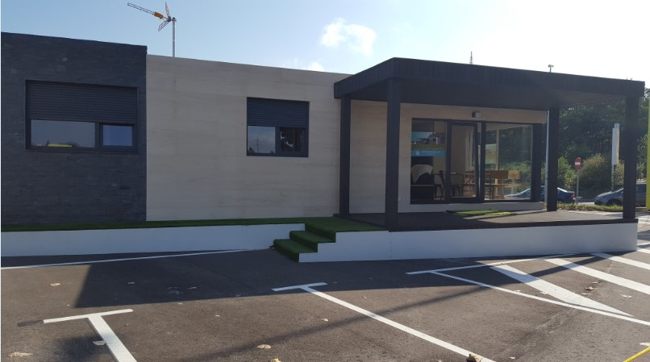
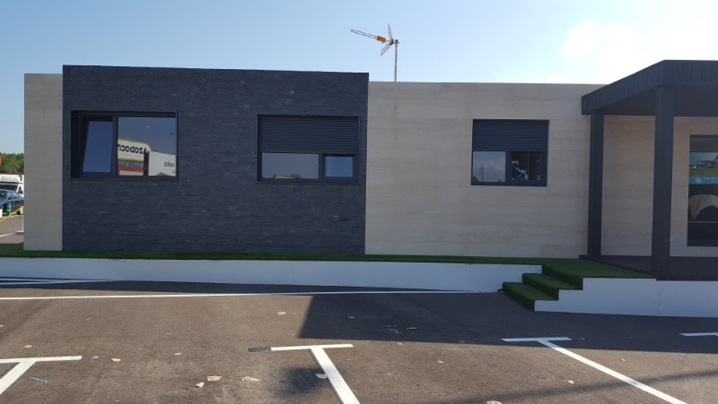
Una vez el terreno era nuestro y teníamos cerrada la cimentación, cube nos citó para una reunión en Marineda, donde pudimos añadir algunas cosas a la casa que considerábamos importantes, como la cocina, que la modificamos por completo, y pudimos modificar también algunos aspectos de la distribución, así como marcar los puntos de interruptores, enchufes, y demás. Finalmente, nuestro plano quedó de la siguiente manera a la espera del presupuesto final:

Añadimos la cimentación a los gastos, y todos los extras que sumamos a la casa. Y el presupuesto de la casa ascendió a 117.387€ más los muebles. En este punto fue donde recibimos mucha ayuda en casa: varios familiares nos compraron diversos aspectos que fueron restando euros a nuestra lista, los más grandes fueron el porche, que nos restó 6.500€ y los muebles, que nos restaron otros 4.000€ aprox.
Una semana después de la reunión, cube nos facilitó el proyecto básico para solicitar en el ayuntamiento la licencia de obra. Pagamos las tasas y a esperar… Y esperar…. Y esperar…. Así 8 meses de nuestra vida. El ayuntamiento fue bastante rápido, en dos mesitos tenía la validación, pero aquí entró en juego patrimonio. Tardó lo que suele tardar, una vida....... pero respondió que podíamos aplicar el proyecto modificando algunas partidas, como el revestimiento de la casa, que sólo nos permitía poner mortero blanco + pizarra. Queríamos el revestimiento de mármol por sus ventajas a nivel mantenimiento y limpieza, pero por no volver a esperar otros 8 meses más, decidimos ni pelear por ello, aplicar los cambios que solicitaban en el proyecto y enviarlo de nuevo para su aprobación final. La parte positiva es que escoger mortero nos restaba del presupuesto el revestimiento de mármol y gracias a ello nos ahorrábamos otros euros más.
El cambio en la vivienda iba a ser notable por fuera. El resultado iba a ser este:
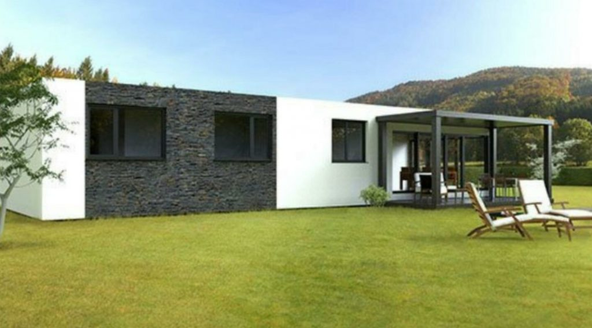
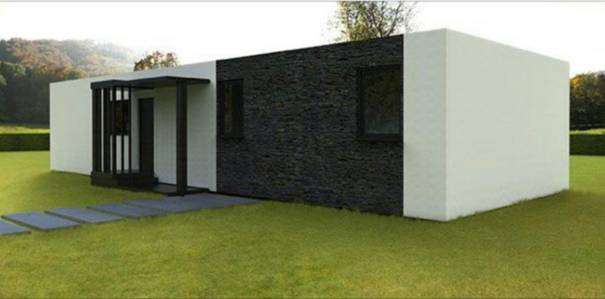
Ojo que ya ha pasado 1 año desde que visitamos la casa piloto por primera vez, y todavía no hemos empezado ni a hacer un agujero en la parcela… Quien se meta a algo así, debe tener muy claro que la paciencia es su mejor aliado…. Eso sí, son 12 meses de 24 nóminas y ahorro máximo. Esta fue la clave de nuestra suerte.
Dado que estaba claro que el ayuntamiento y patrimonio habían aprobado el proyecto con alguna modificación, cube nos comentó que si efectuábamos el primer pago, podían empezar la construcción en fábrica (aquí está gran parte del secreto del ahorro de tiempo de cube. Pueden empezar la obra sin la concesión final de la licencia porque es en su fábrica). Adelantamos ese primer pago de fondos propios (el banco sólo paga con certificados de avance de obra, por lo que el primer pago debe ser de fondos propios).
Comenzó la obra en fábrica, y en tres ocasiones pasamos por ahí (vivimos a una hora de allí) para acercarles varias cosas que queríamos que instalaran en la casa (un foco en el exterior de la casa, dos radiadores toalleros en el baño, etc). Las visitas fueron muy emocionantes. Esto es lo que pudimos ver:
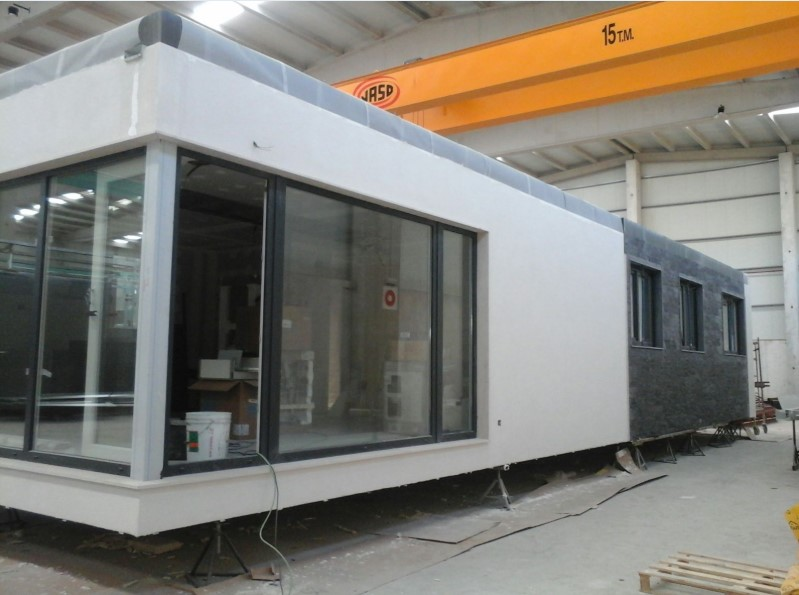
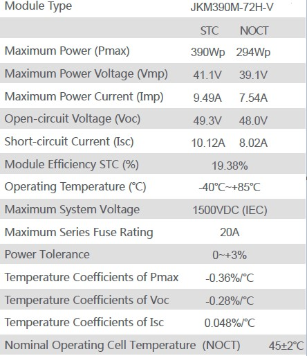
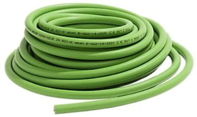
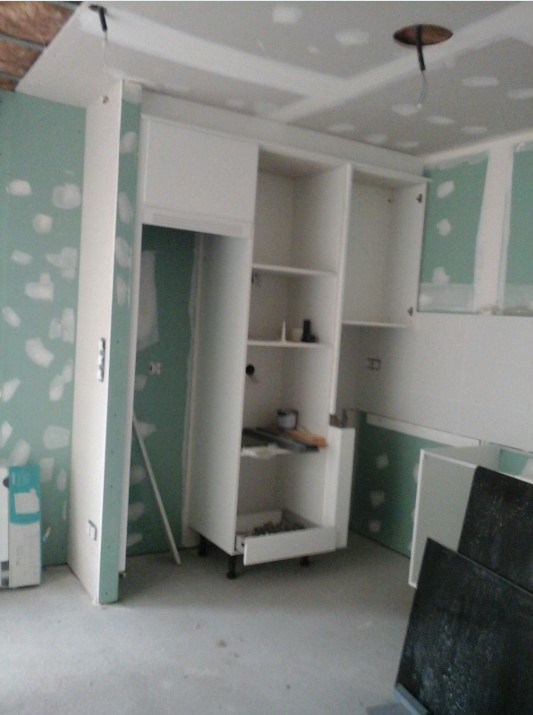
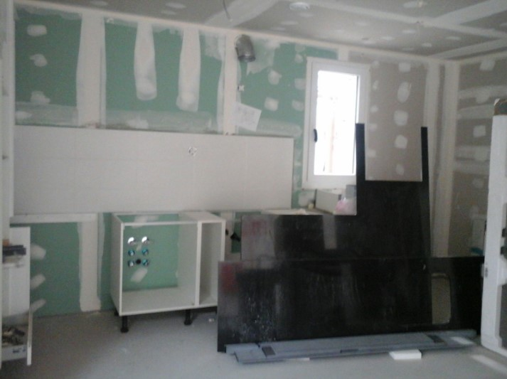
El hecho de ver físicamente la casa, aunque fuera solo las 4 paredes, hizo que nos motiváramos para seguir con nuestro plan de ahorro total. En un año habíamos ahorrado más que en los últimos 5 años.
Patrimonio tardó otros 2 meses en responder con el visto bueno. Así que en mayo de 2017 empezaron los trabajos en nuestra parcela para preparar la cimentación:
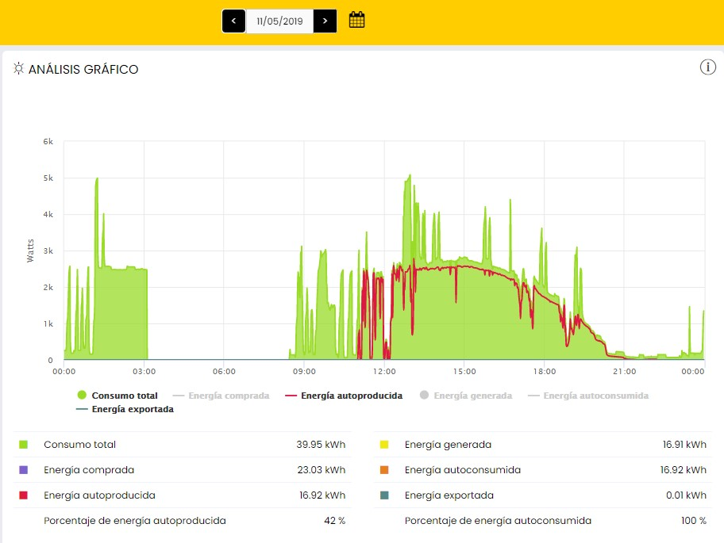
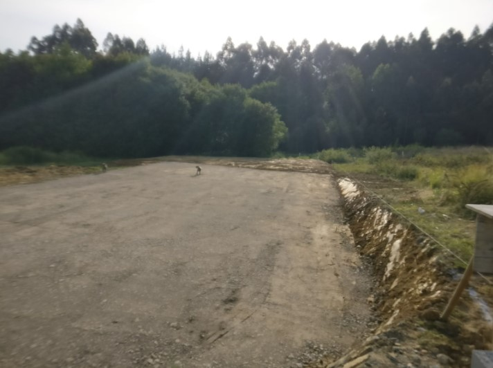
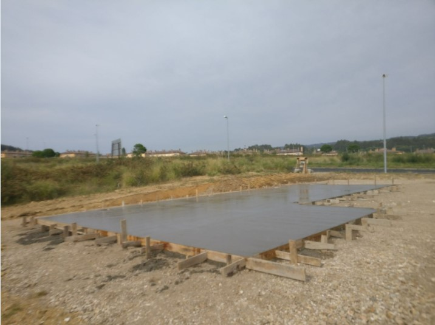
A mediados de Mayo trajeron la casa a la parcela. El momento de su traslado fue un show. Nos enviaban mensajes nuestros amigos del tipo: Acabo de ver pasar vuestra casa por delante de la mia....
Imaginaros, en un pueblo fue expectación máxima!
Os dejamos este vídeo de la instalación en la parcela:
https://youtu.be/3Vh38QV7oR0Desde ese momento en adelante, nos coordinamos con los operarios que cube contrataba para hacer las diferentes tareas en la parcela. El cierre de la finca se lo encargamos a una empresa externa y tuvo que realizarlo después de que cube pavimentara con hormigón impreso la entrada de la parcela. Para que veáis que no exageramos con plazos de entrega nos ceñimos a la realidad:
- 18 de Mayo: instalación de la vivienda en la parcela.
- 26 de Julio: nos dan las llaves de la vivienda.
Es decir, unos pocos días por encima de los 2 meses desde que instalaron la casa en la parcela, más 1 mes y unos pocos días que la casa tardó en estar lista en fábrica.
Están por debajo de los 4 meses desde que se realiza el primer pago para la construcción, así que no nos mintieron en la visita a la casa piloto.
En ese periodo de tiempo íbamos viendo los avances: primero traen la casa, luego instalan las acometidas mientras realizan los trabajos pendientes en el interior de la vivienda, vimos avanzar la canalización y la cimentación de la entrada así como los remates externos de la casa.
El fin de semana siguiente a tener las llaves de la casa nos mudamos. Pasamos el verano pasado ya en la casa y trabajando sobre todo en el exterior para evitar el barro (que con el paso de camiones y excavadoras era lo más sucio). Plantamos césped, algunos árboles frutales, construimos un pequeño muro (para evitar que la tierra se desplazara y acabara en nuestra finca dado el desnivel con el terreno colindante) con dos de nuestros amigos que son albañiles, pintamos el muro, pusimos una vallita para evitar que las perritas accedieran a la zona de coches, etc.
Todos estos extras en el jardín fuimos haciéndolos mes a mes, a medida que íbamos cobrando las nóminas, porque entramos en la casa a cero euros en el banco. De hecho, para poder pagar el cierre de la finca, nos vimos obligados a pedir un préstamo personal de 6.000€ en el banco para poder afrontarlo… quemamos todos nuestros cartuchos.
La evolución durante el primer año en la vivienda fue este:
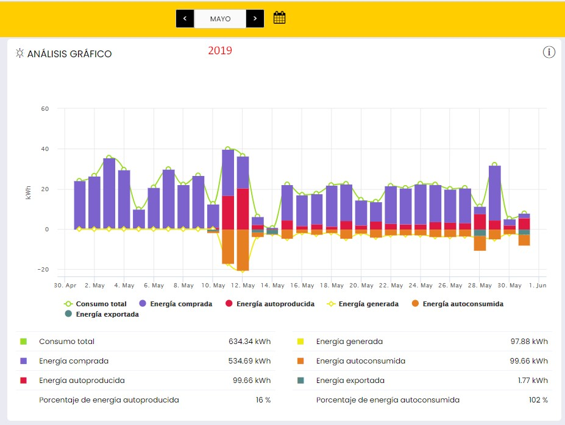
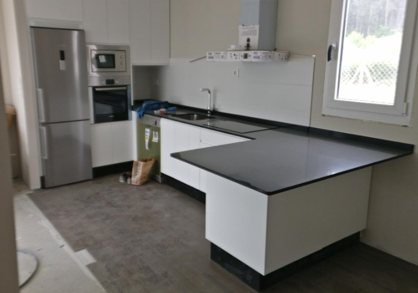
{kind=link}
{kind=link}
{kind=link}
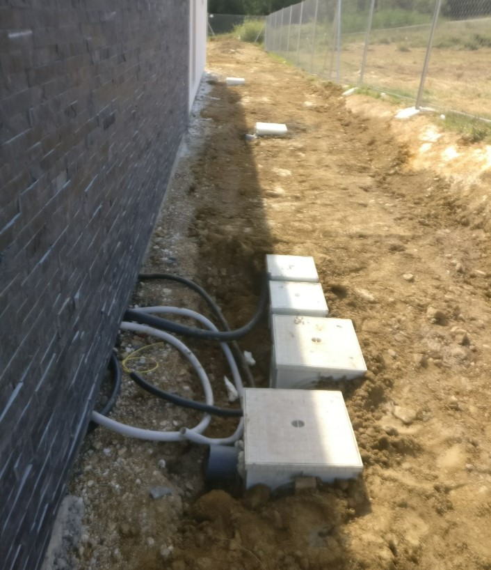
{kind=link}
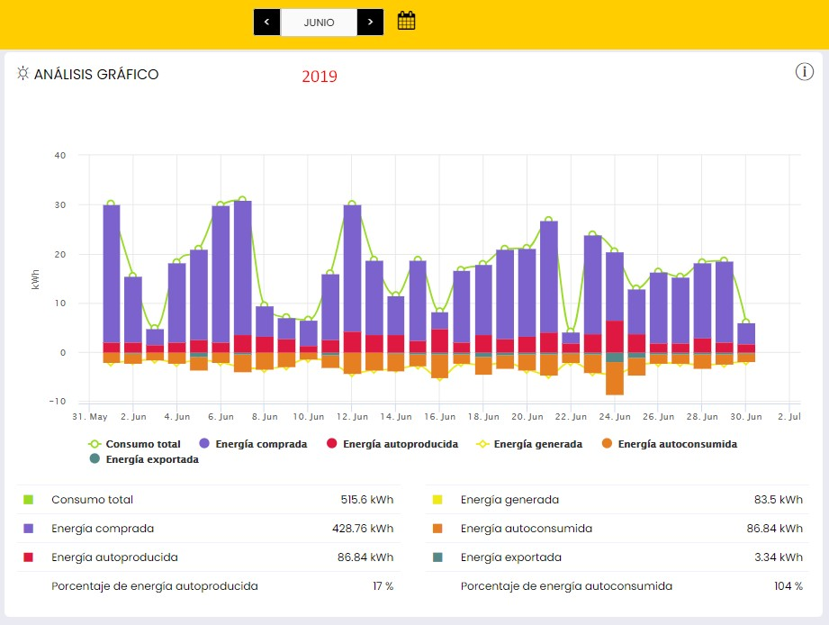
{kind=link}
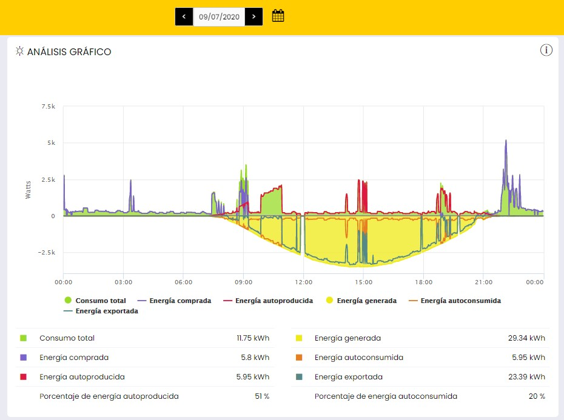
{kind=link}
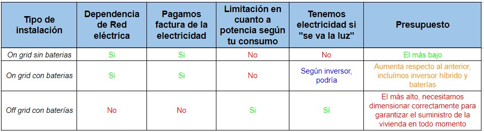
{kind=link}
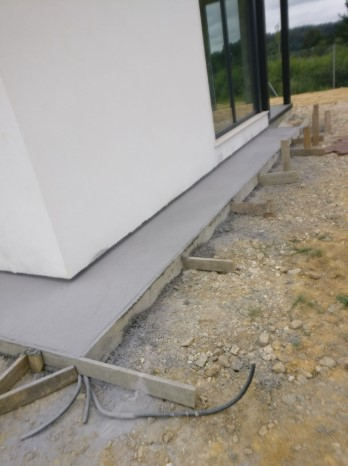
{kind=link}
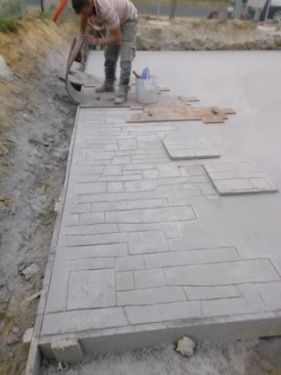
{kind=link}
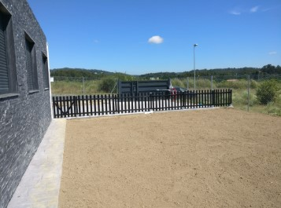
{kind=link}
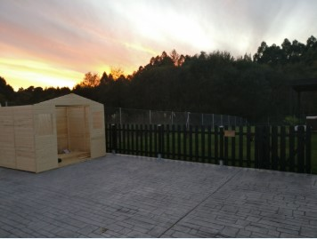
{kind=link}
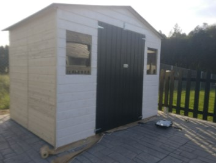
{kind=link}
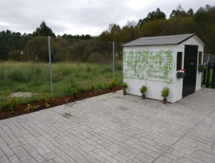
{kind=link}
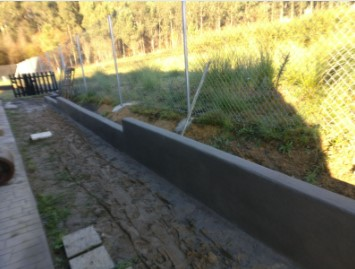
{kind=link}
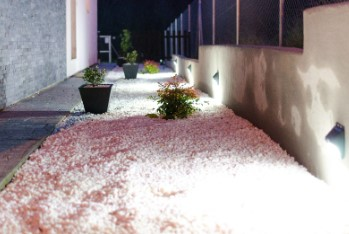
{kind=link}
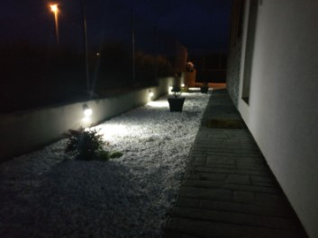
{kind=link}
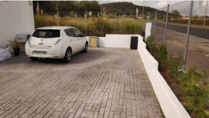
{kind=link}
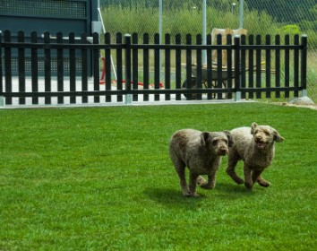
{kind=link}
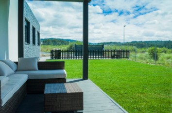
{kind=link}
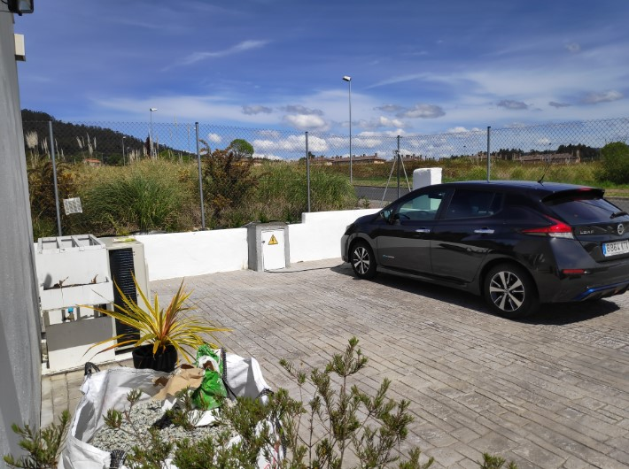
{kind=link}
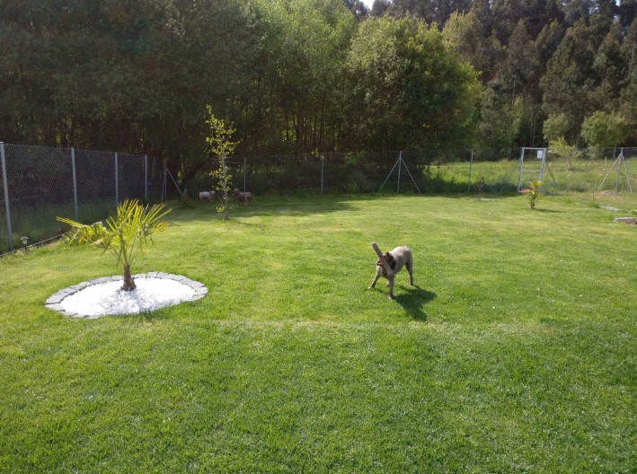
{kind=link}
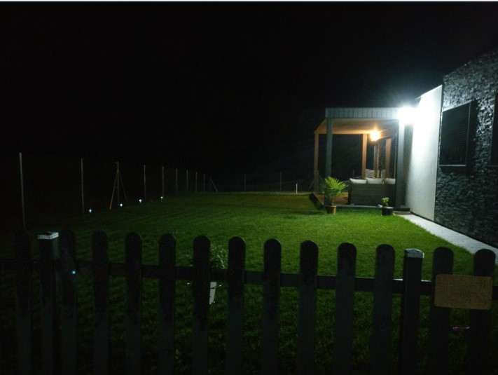
{kind=link}
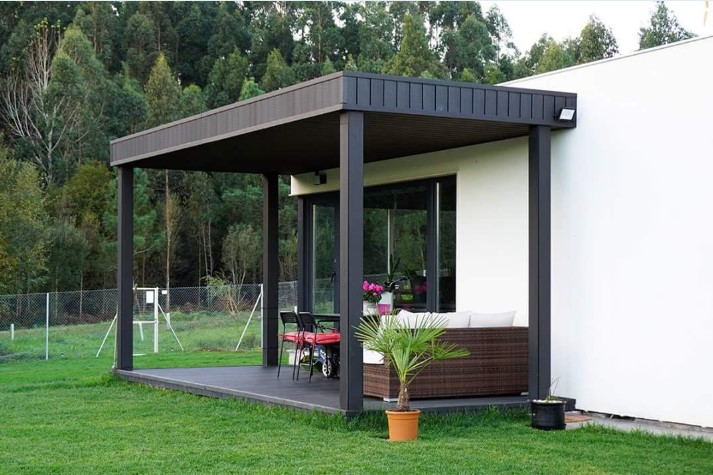
{kind=link}
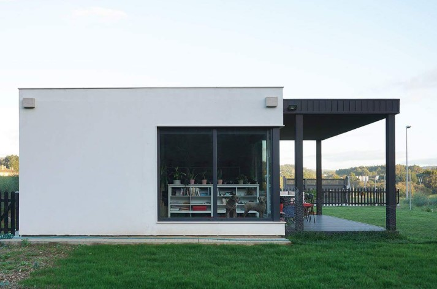
{kind=link}
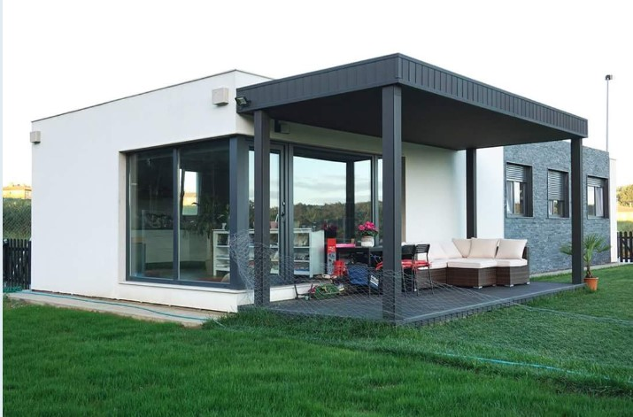
{kind=link}
{kind=link}
{kind=link}
{kind=link}
{kind=link}
{kind=link}
{kind=link}
{kind=link}
{kind=link}
{kind=link}
{kind=link}
{kind=link}
{kind=link}
{kind=link}
{kind=link}
Resumen Temporal y Económico
El proceso completo nos llevó desde Abril de 2016 hasta Agosto 2017 (desde que visitamos la casa piloto de cube, buscamos, encontramos y compramos terreno, analizamos bancos para hipotecas, solicitamos licencias al ayuntamiento, recibimos las licencias, empezó la construcción, terminaron la obra y nos dieron las llaves).
Os adjunto el cuadro de gastos de la construcción en sí:
A nivel económico, como podéis observar, el terreno es verdaderamente lo que determina el presupuesto. Encontrar una parcela bien ubicada, con acometidas cerca, con buena forma, buen tamaño y barata, es difícil. Los gastos y precios que tuvimos nosotros son en nuestra zona, somos conscientes de que en grandes ciudades esto sería inviable, por ello recomendamos alejarse un poco de los grandes núcleos urbanos para encontrar los chollos.
Nosotros recibimos mucha ayuda familiar con regalos diversos y préstamos que debimos declarar correctamente para cumplir con la legalidad. Sin esa ayuda, no habríamos podido hacer ni comprar muchas de las cosas: el porche, el cierre de la finca, etc.
Del resto de gastos, no todos son obligatorios. Si os fijáis, la partida del cierre de 6.980€ podría eliminarse y realizarse en un futuro. Pero hay que tener en cuenta que al solicitar la licencia de obra se debe incluir todo lo que se va a construir en el proyecto y pagar los impuestos correspondientes por ello, teniendo 2 años de plazo desde que se concede la licencia de obra para finalizar la construcción total en nuestro caso. Si por ejemplo no incluíamos el cierre, deberíamos presentar un nuevo proyecto cuando quisiéramos hacerlo y esperar por otra licencia de obra para realizarlo. Al conocer la situación de patrimonio y el tiempo de demora que supone, preferimos tramitarlo todo junto, aún a sabiendas de que posiblemente no dispondríamos de todo el dinero (contábamos con ayuda en forma de préstamos familiares y con la posibilidad de pedir un préstamo al banco -que fue lo que sucedió- para rematarlo todo).
Finalmente, cuando tramitamos la certificación energética conseguimos una A.
Tras un año de entrar a vivir en la casar, nos informamos sobre la posibilidad de instalar paneles solares en casa y sobre la movilidad eléctrica. Cosa que os contaremos en las siguientes entradas de la web.
Opinión personal sobre el proceso y sobre la casa cuando llevábamos un año y medio en la casa
El proceso se vive muy intensamente, con mucho estrés por la cantidad de dinero que requiere y los recursos de los que cada uno dispone. En nuestro caso, no teníamos asesoramiento por parte de nadie e íbamos a ciegas en cuanto a gastos de burocracia, ayuntamiento, registro, notaría, etc. Agradecimos enormemente contar con un presupuesto cerrado por parte de la constructora y podernos despreocupar de sorpresas en el aspecto constructivo de la vivienda.
Sin embargo, a la vez es un momento de la vida muy ilusionante, en la que se aprende muchísimo, y en la que si uno no tiene paciencia, LA APRENDE, no hay otra forma de sobrevivir. El imaginarte en la casa, el luchar y centrar todas las fuerzas (puramente ahorrativas) en un objetivo común (para la pareja), el pensar en cómo amueblar, en cómo arreglar el jardín, etc. mantiene la ilusión y la parte positiva del proceso.
El día que se realiza la entrega de llaves es un sueño hecho realidad. Muchos meses esperando, mucho dinero ahorrado a costa de privarse de muchas cosas y bueno, llega el momento y merece la pena.
En cuanto a la empresa, recomendamos CUBE a TODO el mundo. Se desviven por facilitar el proceso a los clientes, informan concienzudamente de todos los aspectos de la construcción, tienen un gran conocimiento sobre el proceso (incluso en ocasiones presentábamos documentación ANTES de que el ayuntamiento lo solicitara, eso transmite seguridad y tranquilidad, y el ayuntamiento no pone problemas porque todo va en plazo y correcto). En cuanto al proceso de pago, se adaptan a cualquier opción que proponga el banco para facilitar las cosas. Además, nos hicieron de coach en muchísimas ocasiones. Es un proceso duro, lo saben, y te preparan y advierten sobre los puntos negativos que tiene este proceso. Estuvieron a nuestra disposición por email, por teléfono, en la oficina, y siempre respondieron fenomenal cuando solicitamos visitas a las casas piloto (en total hicimos 5 visitas entre la casa de Coruña y Gijon, con distintos miembros de nuestra familia) y a fábrica (que visitamos otras 3 ocasiones).
Además, tras entregarnos las llaves siguieron pendientes de nosotros. Acudió el servicio postventa a cerrar unos cuantos aspectos que teníamos pendientes y podemos comunicarnos con él por whatsapp o teléfono siempre que tengamos dudas.
Finalmente, tras llevar casi dos años viviendo en la casa, podemos garantizar que el aislamiento térmico y acústico es real. Los inviernos han sido los primeros de nuestras vidas que hemos pasado sin un ápice de frío, a pesar de haberse alcanzado temperaturas por debajo de CERO en nuestra urbanización. La calefacción mediante aerotermia ha hecho que redujéramos a la mitad la factura de la luz respecto a lo que pagábamos en los pisos en los que vivíamos. Y eso que en los pisos donde vivimos, jamás tuvimos calefacción. O sea, que ahora pagamos la mitad de luz que antes incluyendo calefacción que antes no podíamos permitirnos. Comentaremos sobre ello en siguientes entradas en al web.
Hemos trabajado muy duro en el jardín y hemos aprendido un millón de trucos para mantener un huertecito. El consumo de agua es el mismo que en un piso, a pesar de que ahora regamos en muchas ocasiones.
El primer año fue también duro a nivel económico por ese préstamo que os comentamos que tuvimos que solicitar y todas aquellas cosas que nos quedaban pendientes por hacer (el muro de contención, el césped, y un largo etc que no creo que acabe nunca, porque las casas de campo con terreno siempre tienen trabajo, pero es un trabajo gratificante). Hemos trabajado duro para poder amortizarlo cuanto antes.
En cuanto a limpieza, la casa se limpia muy rápidamente, los cristales a pesar de ser muy amplios se limpian muy fácilmente con un aparato de karcher muy económico.
En cuanto a calidad de vida, qué os vamos a contar. Estamos muy contentos con el resultado. Nos queda mucho trabajo por delante, pero sabemos que si siguiéramos alquilados tendríamos más dinero ahora, pero a la larga mucho menos. Ahora mismo, mirando atrás, nos damos cuenta de la cantidad de dinero que gastamos cuando no teníamos un objetivo como el de construir una casa. Dinero gastado sin necesidad en comidas/cenas fuera, en compras realizadas sin mirar el precio de los productos, y un largo etc que todos sabéis y del que somos conscientes cuando reflexionamos, pero que en el día a día pasa desapercibido.
Las ventajas respecto a nuestra vida anterior son numerosas: cero ruidos por vecinos, facturas de luz muy inferiores, cuota más baja de hipoteca que de alquiler, facilidad en cuanto a sacar a las perras a pasear y jugar (entran y salen cando quieren al jardín, y saben que sus necesidades se realizan fuera de la parcela 2/3 veces al día, en paseos que antes debían ser de mínimo 20 minutos y ahora con 2 minutos ya son ellas las que quieren volver para casa), reuniones con los amigos y familiares con comidas en casa mucho más frecuentes, etc.
También tiene algunas desventajas, que conste, como por ejemplo los pequeños animales: dentro de casa no nos afecta porque instalamos mosquiteras en todas las ventanas y puertas, pero hay muchos animales que a muchas personas no gustan (ni la mitad de lo que esperábamos, pero los hay). Y otro punto que para muchos es negativo, es que hay mucho trabajo en el jardín para ponerlo a gusto de cada uno. Por otra parte, siempre hay aspectos de la casa que se quieren mejorar. Eso nos habría sucedido también en un piso propio, que siempre ves mejoras que se pueden aplicar que estando alquilados no se te pasan por la cabeza.
Sugerencias para el que esté pensando en iniciar un proyecto de este tipo
Recomendamos a los que vayan a empezar un proceso similar que se informen todo lo que puedan de los gastos que conlleva para poder solicitar al banco lo suficiente como para terminar el proceso. Nosotros nos quedamos cortos y hubiéramos agradecido tener mas información en un inicio sobre los gastos de impuestos, registrales, bancarios, etc. Ni que decir de que se tenga un pequeño colchón de ahorros para suplir gastos que no entran dentro de la hipoteca.
Lo segundo que recomendamos, es que se analice bien el aspecto bancario. Los bancos aprovechan mucho la oportunidad de incluir seguros vinculados de por vida al crédito hipotecario, tarjetas que obligan a utilizar con un crédito por ir todo unido a una parrilla de bofinicaciones. La parrilla de bonificaciones significa que el banco ofrece un tipo de interés para la hipoteca y, si cumples con varios puntos de una lista, va reduciendo el tipo de interés de la hipoteca, pero claro, esto se revisa cada cierto tiempo, y lo que hoy es seguro igual en 3 años cambia y te suben el interés. Nosotros queríamos una hipoteca a tipo fijo para siempre, sabiendo SIEMPRE lo que voy a pagar, cambien mis circunstancias o no.
Dado que no es una hipoteca tradicional, sino que es de auto-promoción por financiar una construcción, casi ningún banco oferta estos créditos. En nuestro caso, evitamos esas vinculaciones a toda costa. Conseguimos firmar una hipoteca en la que únicamente nos obligaban a tener seguro de vida y de hogar el primer año con ellos, y a partir del segundo libre (este año, ya hemos renovado el seguro de vida y ha supuesto un ahorro de 175€ respecto al que firmé el primer año con el banco). Logramos también no vernos obligados a depender de parrilla de bonificaciones, ni a tener siquiera la nómina vinculada, de modo que si alguno de los dos el día de mañana se queda sin trabajo y desaparece una nómina del banco, no nos suben el tipo de interés y siempre, siempre, vamos a pagar 440€ mensuales, salvo que amorticemos en plazo o cuota.
Evolución una vez nos asentamos en la vivienda
Y eso es todo amigos. Esperamos haber disipado algunas de vuestras dudas :)